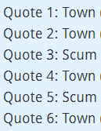

y’all submitted y’all answers already
I dunno
before submitting, you can look after
It gets a lot easier to read people once you are scum with them, since a lot of how they are is revealed to you then.
I am pleased to report the icecream is very good
2 Likes
In retrospective...
Having a game where I can actually solve here without being fearkilled n1 here was a breath of fresh air, tbh.
1 Like
Answers

You all failed the test anyway.
Mostly cause test wasn’t about number of correct answers.
reminds me of something
something called school
1 Like
well, I tried
@Kirefitten
If you have different opinion about result of experiment, message me.
I’m really curious what hypothesis you were testing.
He probably won’t tell us but will keep discussing it in the thread with FK
4/6 I’ll take it.
Orrrr did we all pass the test. 
your test was rigged
But didn’t you fear a paranoid Reaper. 
U read me like a book good job
Tbh, as scum you need to start making stronger conclusions and stop hedging. Finishing a wallpost with a hedge looks terrible in general and I never see you do that as town.
Yeah… i have a hard time with that, but i will try. Thanks for the advice though 
1 Like
Idk I would say slight scumread, they havent impressed me much but not a lot of people have either.
This line was probably the smoking gun that made me want to detonate you. The second part focused way too much on the conditional of others when it came for the read on Arete.
1 Like